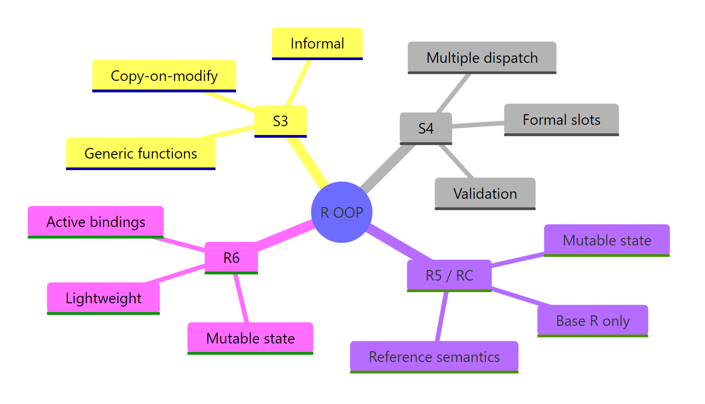

R OOP Systems Explained: S3, S4, R5, R6 — Pick the Right One in 3 Questions
R has four object-oriented programming systems — S3, S4, R5 (Reference Classes), and R6 — each with different trade-offs around formality, mutability, and ease of use. Three questions are all you need to pick the right one for your project.
What are R's four OOP systems and why do they exist?
R grew its OOP toolkit over three decades. S3 arrived in the early 1990s as a lightweight naming convention. S4 added formal type-checked slots in R 1.4. R5 (Reference Classes) brought mutable objects in R 2.12. R6, a CRAN package, refined the mutable approach with a cleaner, lighter API. Let's see S3 — the most common system — at work right now.
# Create an S3 object: a simple "dog" with name and breed
dog <- list(name = "Buddy", breed = "Golden Retriever")
class(dog) <- "dog"
# Define a generic function
describe <- function(x, ...) UseMethod("describe")
# Define a method for the "dog" class
describe.dog <- function(x, ...) {
paste(x$name, "is a", x$breed)
}
# Call it — R dispatches to describe.dog automatically
describe(dog)
#> [1] "Buddy is a Golden Retriever"
class(dog)
#> [1] "dog"
That's polymorphism in action: the describe() generic examines the object's class and routes the call to describe.dog(). If you created a "cat" class, you'd write describe.cat() and the same describe() call would work on both. No if-else chains needed.
This is functional OOP — the method belongs to the generic function, not to the object. S3 and S4 both work this way. R5 and R6 take the opposite approach: encapsulated OOP, where methods live inside the object itself (like Python or Java). Think of it this way: functional OOP is like a restaurant where the waiter (generic) decides who handles your order based on cuisine type. Encapsulated OOP is like a food truck where the truck (object) does everything itself.
The fundamental divide in R's OOP world is functional vs encapsulated. S3 and S4 use functional OOP where methods belong to generic functions. R5 and R6 use encapsulated OOP where methods belong to objects. This isn't a quality difference — it's a design philosophy difference that shapes how you structure your code.
Here's a quick overview of what makes each system unique:
Explanation: The method name describe.cat follows the generic.class convention. When you call describe(ex_cat), R sees that ex_cat has class "cat" and dispatches to describe.cat().
How does S3 work?
S3 is the simplest and most widely used OOP system in R. Every time you call print(), summary(), or plot() on an R object, S3 is working behind the scenes. There are no formal class definitions — just a naming convention.
Let's build a proper S3 class with a constructor, validation, and inheritance.
# Constructor function: creates a validated "dog" object
new_dog <- function(name, breed, age) {
if (!is.character(name)) stop("name must be a character string")
if (!is.numeric(age) || age < 0) stop("age must be a non-negative number")
obj <- list(name = name, breed = breed, age = age)
class(obj) <- "dog"
obj
}
# Print method — called automatically when you type the object name
print.dog <- function(x, ...) {
cat(sprintf("Dog: %s (%s, %d years old)\n", x$name, x$breed, x$age))
}
# Create and print
buddy <- new_dog("Buddy", "Golden Retriever", 3)
buddy
#> Dog: Buddy (Golden Retriever, 3 years old)
Tip
Always write a constructor function for S3 classes. Directly setting class(x) <- "myclass" on an arbitrary list skips validation and makes bugs hard to trace. A constructor like new_dog() guarantees every object starts in a valid state.
Now let's see how S3 handles inheritance. It uses the class vector — a character vector where earlier entries take priority during method dispatch.
# Puppy inherits from dog — just prepend "puppy" to the class vector
new_puppy <- function(name, breed, age, training_level = "beginner") {
obj <- new_dog(name, breed, age) # reuse parent constructor
obj$training_level <- training_level
class(obj) <- c("puppy", "dog") # puppy first, then dog
obj
}
# Method for puppy
describe.puppy <- function(x, ...) {
paste(x$name, "is a puppy in", x$training_level, "training")
}
# Method dispatch in action
pup <- new_puppy("Max", "Labrador", 1)
describe(pup)
#> [1] "Max is a puppy in beginner training"
# Falls back to dog's print method (no print.puppy defined)
pup
#> Dog: Max (Labrador, 1 years old)
# Check the class hierarchy
inherits(pup, "dog")
#> [1] TRUE
class(pup)
#> [1] "puppy" "dog"
When you call describe(pup), R looks for describe.puppy first. It finds it and calls it. When you call print(pup), R looks for print.puppy, doesn't find it, and falls back to print.dog. That's S3 method dispatch — simple, predictable, and zero boilerplate.
Warning
S3 has no built-in type checking on fields. Anyone can write buddy$age <- "old" and R won't complain. If field integrity matters, validate in every function that modifies the object — or consider S4 instead.
Try it: Create an S3 "book" class with a constructor new_book(title, author, pages). Write a print.book() method that displays "<title> by <author> (<pages> pages)". Test it with your favourite book.
# Try it: build an S3 book class
new_book <- function(title, author, pages) {
# your code here
}
print.book <- function(x, ...) {
# your code here
}
# Test:
ex_book <- new_book("R for Data Science", "Hadley Wickham", 522)
ex_book
#> Expected: R for Data Science by Hadley Wickham (522 pages)
Click to reveal solution
new_book <- function(title, author, pages) {
obj <- list(title = title, author = author, pages = pages)
class(obj) <- "book"
obj
}
print.book <- function(x, ...) {
cat(sprintf("%s by %s (%d pages)\n", x$title, x$author, x$pages))
}
ex_book <- new_book("R for Data Science", "Hadley Wickham", 522)
ex_book
#> R for Data Science by Hadley Wickham (522 pages)
Explanation: The constructor wraps a list, assigns the class, and returns it. print.book() uses cat() with sprintf() for clean formatted output.
How does S4 add formal structure?
S4 brings formal class definitions with typed slots (named fields with declared types), built-in validity checks, and multiple dispatch. If S3 is a handshake agreement, S4 is a signed contract.
Let's define an S4 class with slots, a validity function, and a custom show() method.
library(methods)
# Define an S4 class with typed slots
setClass("Animal",
slots = list(
name = "character",
species = "character",
weight = "numeric"
),
validity = function(object) {
if (object@weight <= 0) return("weight must be positive")
if (nchar(object@name) == 0) return("name cannot be empty")
TRUE
}
)
# Custom show method (S4's version of print)
setMethod("show", "Animal", function(object) {
cat(sprintf("%s the %s (%.1f kg)\n", object@name, object@species, object@weight))
})
# Create an object with new()
cat1 <- new("Animal", name = "Luna", species = "Cat", weight = 4.2)
cat1
#> Luna the Cat (4.2 kg)
# Access slots with @
cat1@species
#> [1] "Cat"
Notice the differences from S3: you declare each slot's type upfront, access fields with @ instead of $, and the validity function runs automatically when the object is created.
Key Insight
S4's validity function runs automatically on object creation — S3 can't do this. If someone tries to create an Animal with negative weight, they get an error immediately, not a silent bug that surfaces three functions later.
Let's see inheritance and validity rejection in action.
# Dog extends Animal with an extra slot
setClass("DogS4",
contains = "Animal",
slots = list(
breed = "character"
)
)
setMethod("show", "DogS4", function(object) {
cat(sprintf("%s the %s (%s, %.1f kg)\n",
object@name, object@species, object@breed, object@weight))
})
# Works fine
rex <- new("DogS4", name = "Rex", species = "Dog",
weight = 28.5, breed = "German Shepherd")
rex
#> Rex the Dog (German Shepherd, 28.5 kg)
# Validity blocks bad data
tryCatch(
new("Animal", name = "Ghost", species = "Dog", weight = -5),
error = function(e) cat("Error:", conditionMessage(e), "\n")
)
#> Error: invalid class "Animal" object: weight must be positive
S4 inheritance uses the contains argument. The child class (DogS4) inherits all slots and the validity function from Animal, plus adds its own. The @ accessor works the same for inherited slots.
Note
S4 is the standard in Bioconductor. If you contribute to bioinformatics or genomics packages, you'll encounter S4 everywhere. The SummarizedExperiment, GenomicRanges, and Biostrings packages all use S4 extensively.
Try it: Create an S4 "Rectangle" class with width and height slots (both numeric). Add a validity check that both must be positive. Write a generic area() and a method that returns width * height.
Explanation: The validity function checks both dimensions are positive. setGeneric() creates a new generic, and setMethod() provides the Rectangle-specific implementation.
What are R5 reference classes?
R5 — officially called Reference Classes (RC) — brought mutable objects to base R in version 2.12. Unlike S3 and S4 where modifying an object creates a copy, R5 objects change in place. Methods live inside the class definition, just like in Python or Java.
Notice how acct$deposit(50) changes the balance in place — no reassignment needed. The <<- operator modifies the field in the object's environment.
Warning
Reference semantics mean assignment does not copy. This is the biggest gotcha for R programmers accustomed to copy-on-modify behaviour. If you assign an R5 object to a new variable, both variables point to the same object.
Watch what happens when two variables reference the same account.
# The reference gotcha: both variables point to the SAME object
acct2 <- acct
acct2$deposit(1000)
#> Deposited $1000.00. Balance: $1120.00
# acct also changed — they're the same object!
acct
#> Account: Alice | Balance: $1120.00
# To get an independent copy, use $copy()
acct3 <- acct$copy()
acct3$withdraw(500)
#> Withdrew $500.00. Balance: $620.00
# Original is unchanged
acct
#> Account: Alice | Balance: $1120.00
This behaviour is powerful for modelling real-world entities (database connections, GUI widgets, game state) but dangerous if you forget. Always use $copy() when you need an independent duplicate.
Try it: Create an R5 "Counter" class with a count field (starts at 0), an increment() method that adds 1, and a reset() method that sets count back to 0. Verify that incrementing 5 times gives count = 5.
# Try it: R5 Counter class
Counter <- setRefClass("Counter",
fields = list(count = "numeric"),
methods = list(
initialize = function() {
count <<- 0
},
increment = function() {
# your code here
},
reset = function() {
# your code here
}
)
)
# Test:
ex_ctr <- Counter$new()
for (i in 1:5) ex_ctr$increment()
ex_ctr$count
#> Expected: 5
Explanation: Each call to increment() modifies count in place using <<-. The reset() method sets it back to 0. No reassignment of the Counter object is needed.
How does R6 improve on reference classes?
R6 is a CRAN package that provides the same mutable, encapsulated OOP as R5 but with a cleaner, more modern API. It adds private fields (true encapsulation), active bindings (computed properties), and method chaining — features R5 lacks or makes awkward.
The private list hides internal state. Users interact through public methods, which prevents accidental corruption. The active list creates computed properties that act like fields but recalculate on access.
Tip
Use private fields and active bindings to enforce encapsulation. Instead of exposing $balance directly (where anyone could set it to -9999), expose $get_balance() for reading and $deposit()/$withdraw() for controlled changes.
R6 also makes inheritance and method chaining clean.
Method chaining works because each method returns invisible(self). This lets you string operations together like a pipeline — familiar if you've used Python's fluent interfaces or JavaScript's jQuery.
Key Insight
If you come from Python, Java, or JavaScript, R6 will feel immediately familiar. Objects own their methods, private fields enforce encapsulation, and inheritance uses a single inherit argument. R6 bridges the gap between R's functional roots and mainstream OOP conventions.
Try it: Create an R6 "Logger" class with a private messages field (list), a public log(msg) method that appends to messages, and a public show_all() method that prints all messages. Test it by logging 3 messages.
# Try it: R6 Logger
Logger <- R6Class("Logger",
private = list(
messages = NULL
),
public = list(
initialize = function() {
private$messages <- list()
},
log = function(msg) {
# your code here
},
show_all = function() {
# your code here
}
)
)
# Test:
ex_log <- Logger$new()
ex_log$log("Started")
ex_log$log("Processing")
ex_log$log("Done")
ex_log$show_all()
#> Expected: prints all 3 messages
Explanation:log() appends to the private list using c(). show_all() iterates and prints. The private field keeps the raw message list hidden from external access.
Which OOP system should you choose?
Here's the decision framework promised in the title. Three binary questions, four possible answers.
Question 1: Does your object need to modify itself in place (mutable state)?
Think database connections, GUI widgets, caches, game characters with changing HP. If yes, you need reference semantics — go to Question 2b. If no (most data analysis tasks), go to Question 2a.
Question 2a: Do you need formal type checking and multiple dispatch?
If you're building a large package with many interrelated classes (like Bioconductor), S4's typed slots and validity functions catch bugs early. If you just need quick, flexible dispatch for a few classes, S3 is the pragmatic choice.
No → S3 (simple, universal, covers 90% of use cases)
Let's see how each system handles the same tiny problem — a 2D point with x and y coordinates.
# S3 Point
new_point_s3 <- function(x, y) {
structure(list(x = x, y = y), class = "point_s3")
}
print.point_s3 <- function(p, ...) cat(sprintf("(%g, %g)\n", p$x, p$y))
# S4 Point
setClass("PointS4", slots = list(x = "numeric", y = "numeric"))
setMethod("show", "PointS4", function(object) {
cat(sprintf("(%g, %g)\n", object@x, object@y))
})
# R5 Point
PointRC <- setRefClass("PointRC",
fields = list(x = "numeric", y = "numeric"),
methods = list(
show = function() cat(sprintf("(%g, %g)\n", x, y))
)
)
# R6 Point
PointR6 <- R6Class("PointR6",
public = list(
x = NULL, y = NULL,
initialize = function(x, y) {
self$x <- x; self$y <- y
},
print = function() cat(sprintf("(%g, %g)\n", self$x, self$y))
)
)
# Create and print each
new_point_s3(3, 4)
#> (3, 4)
new("PointS4", x = 3, y = 4)
#> (3, 4)
PointRC$new(x = 3, y = 4)
#> (3, 4)
PointR6$new(3, 4)
#> (3, 4)
Four systems, same result. The differences show up in how much ceremony each requires and what guarantees you get back.
Tip
When in doubt, start with S3. It covers 90% of R use cases with minimal boilerplate. You can always refactor to S4 (for formal validation) or R6 (for mutable state) later — the concepts transfer directly.
Try it: A game character has a name and HP (health points) that changes during combat. Which OOP system would you pick? Write a 1-line justification, then create the class with a take_damage(amount) method.
# Try it: game character with mutable HP
# Which system? (hint: HP changes in place)
# Your justification: ___
# Write your class below:
# Test:
# ex_hero <- ???$new("Aria", hp = 100)
# ex_hero$take_damage(25)
# ex_hero # should show HP = 75
Click to reveal solution
# R6 — because HP changes in place (mutable state) and we want a clean API
Hero <- R6Class("Hero",
public = list(
name = NULL, hp = NULL,
initialize = function(name, hp = 100) {
self$name <- name
self$hp <- hp
},
take_damage = function(amount) {
self$hp <- max(0, self$hp - amount)
cat(sprintf("%s takes %d damage! HP: %d\n",
self$name, amount, self$hp))
invisible(self)
},
print = function() {
cat(sprintf("Hero: %s | HP: %d\n", self$name, self$hp))
}
)
)
ex_hero <- Hero$new("Aria", hp = 100)
ex_hero$take_damage(25)
#> Aria takes 25 damage! HP: 75
ex_hero
#> Hero: Aria | HP: 75
Explanation: R6 is the natural choice — HP changes in place (mutable state) and the character has methods attached to it (encapsulated). S3 would require reassignment after every damage event.
How do the four systems compare side by side?
Here's the comprehensive comparison table. Bookmark this for quick reference.
Feature
S3
S4
R5 (RC)
R6
Paradigm
Functional
Functional
Encapsulated
Encapsulated
Mutability
Copy-on-modify
Copy-on-modify
Reference
Reference
Type checking
None
Formal slots
Typed fields
None (by default)
Validation
Manual
Built-in validity
Manual
Manual
Private fields
No
No
No
Yes
Active bindings
No
No
No
Yes
Multiple dispatch
No
Yes
No
No
Method chaining
No
No
Awkward
Yes
Part of base R
Yes
Yes
Yes
No (CRAN)
Learning curve
Low
High
Medium
Medium
Used by
Base R, tidyverse
Bioconductor
Rare
Shiny, plumber
Let's see the practical difference with a full BankAccount example in all four systems — same operations, different mechanics.
The key takeaway: S3 and S4 require b <- deposit(b, amount) — you reassign the modified copy. R5 and R6 modify in place — b$deposit(amount) and the object updates. Neither approach is "better" — they serve different design needs.
Note
S7 is an emerging OOP system that unifies the best ideas from S3 and S4 — S3's simplicity with S4's type safety. It's being developed by the R Consortium and may eventually become part of base R. For now, the four systems above cover all production use cases.
Try it: Look at the comparison table above. For each scenario, name the best system: (a) a quick analysis script that needs a custom print method, (b) a Bioconductor package with 20 interrelated classes, (c) a Shiny app with a stateful shopping cart.
# Try it: match scenario to system
# (a) Quick analysis script, custom print: ____
# (b) Bioconductor package, 20 classes: ____
# (c) Shiny app, stateful cart: ____
# No code needed — fill in your answers, then check below.
Click to reveal solution
(a) S3 — minimal boilerplate, just need a print.myclass() method. No formal structure needed for a script.
(c) R6 — the shopping cart needs mutable state (items change in place) and private fields protect internal state from accidental modification in Shiny's reactive environment.
Practice Exercises
Exercise 1: Build a TodoList with R6
Create an R6 "TodoList" class where each task has a name and a done status (logical). Implement add_task(name) (adds a task, initially not done), complete_task(name) (marks a task as done), and show() (prints all tasks with [x] or [ ] markers).
# Exercise: R6 TodoList
# Hint: store tasks as a data.frame with name and done columns
TodoList <- R6Class("TodoList",
# Write your class here
)
# Test:
# my_todos <- TodoList$new()
# my_todos$add_task("Learn S3")
# my_todos$add_task("Learn R6")
# my_todos$complete_task("Learn S3")
# my_todos$show()
#> [x] Learn S3
#> [ ] Learn R6
Explanation: Tasks are stored in a private data.frame. complete_task() finds the row by name and sets done to TRUE. The show() method iterates rows and prints status markers.
Exercise 2: S4 Shape hierarchy with validation
Create an S4 class hierarchy: Shape (abstract) → Circle (radius slot) and Rect (width, height slots). Write area() and perimeter() generics with methods for both. Include validity checks that all dimensions must be positive.
# Exercise: S4 Shape hierarchy
# Hint: use setClass with contains for inheritance
# Define area and perimeter generics, then methods for each
# Write your classes and methods here
# Test:
# my_circle <- new("Circle", radius = 5)
# area(my_circle) # ~78.54
# perimeter(my_circle) # ~31.42
# my_rect <- new("Rect", width = 4, height = 6)
# area(my_rect) # 24
# perimeter(my_rect) # 20
Explanation:Shape is an abstract parent (no slots). Circle and Rect both contain it. The area() and perimeter() generics dispatch to class-specific methods. Validity blocks invalid dimensions at creation time.
Exercise 3: Stack in S3 vs R6
Implement a Stack data structure (push, pop, peek, size) in both S3 and R6. Compare how mutable vs immutable state changes the API.
# Exercise: Stack in S3 and R6
# S3 version: push/pop return a new stack (must reassign)
# R6 version: push/pop modify in place
# Hint for S3: store items in a list, return the modified stack
# Hint for R6: use private$items, return invisible(self)
# Write both versions, then test:
# S3 test:
# s <- new_stack_s3()
# s <- push_s3(s, 10); s <- push_s3(s, 20)
# peek_s3(s) # 20
# s <- pop_s3(s)
# peek_s3(s) # 10
# R6 test:
# s <- StackR6$new()
# s$push(10)$push(20)
# s$peek() # 20
# s$pop(); s$peek() # 10
Explanation: The S3 version requires s <- push_s3(s, value) — you must reassign because it returns a modified copy. The R6 version uses s$push(value) — the object changes in place. R6 also enables method chaining with $push(10)$push(20). This is exactly the kind of task where mutability makes the API cleaner.
Putting It All Together
Let's build a small Library system that combines S3 and R6 — proving that different OOP systems can coexist in one project. Books are simple data containers (S3), while the Library manages a mutable collection (R6).
# S3 book objects — immutable data records
new_lib_book <- function(title, author, year) {
structure(list(title = title, author = author, year = year),
class = "lib_book")
}
print.lib_book <- function(x, ...) {
cat(sprintf('"%s" by %s (%d)\n', x$title, x$author, x$year))
}
# R6 Library — mutable collection with methods
LibraryR6 <- R6Class("LibraryR6",
private = list(
books = NULL
),
public = list(
name = NULL,
initialize = function(name) {
self$name <- name
private$books <- list()
},
add_book = function(book) {
if (!inherits(book, "lib_book")) stop("Must be a lib_book")
private$books <- c(private$books, list(book))
cat(sprintf("Added: %s\n", book$title))
invisible(self)
},
search = function(query) {
matches <- Filter(
function(b) grepl(query, b$title, ignore.case = TRUE),
private$books)
if (length(matches) == 0) {
cat("No matches found.\n")
} else {
cat(sprintf("Found %d match(es):\n", length(matches)))
for (b in matches) print(b)
}
invisible(self)
},
list_all = function() {
cat(sprintf("=== %s: %d books ===\n",
self$name, length(private$books)))
for (b in private$books) print(b)
invisible(self)
},
count = function() length(private$books)
)
)
# Build a library
lib <- LibraryR6$new("City Library")
lib$add_book(new_lib_book("Advanced R", "Hadley Wickham", 2019))
#> Added: Advanced R
lib$add_book(new_lib_book("R for Data Science", "Hadley Wickham", 2023))
#> Added: R for Data Science
lib$add_book(new_lib_book("The Art of R Programming", "Norman Matloff", 2011))
#> Added: The Art of R Programming
# Search and list
lib$search("data")
#> Found 1 match(es):
#> "R for Data Science" by Hadley Wickham (2023)
lib$list_all()
#> === City Library: 3 books ===
#> "Advanced R" by Hadley Wickham (2019)
#> "R for Data Science" by Hadley Wickham (2023)
#> "The Art of R Programming" by Norman Matloff (2011)
cat("Total books:", lib$count(), "\n")
#> Total books: 3
This is a common real-world pattern: use S3 for lightweight data records that don't need to change, and R6 for stateful managers that hold collections and enforce business rules. The add_book() method even validates that you're passing a proper S3 "lib_book" object with inherits().
Summary
Here are the key takeaways from this guide:
S3 is R's simplest OOP system — just a list with a class attribute and method naming conventions. Use it for 90% of your classes.
S4 adds formal slots, type checking, validity functions, and multiple dispatch. Use it for large package ecosystems and Bioconductor.
R5 (Reference Classes) provides mutable, encapsulated objects in base R. Use it when you need mutability without external dependencies.
R6 improves on R5 with private fields, active bindings, and method chaining. Use it for stateful objects in modern R applications.
Functional vs encapsulated is the fundamental divide: S3/S4 methods belong to generics, R5/R6 methods belong to objects.
Three questions get you to the right system: (1) mutable state needed? (2) formal validation needed? (3) external dependency OK?
Different OOP systems can coexist in one project — use each where it fits best.

Figure 3: R's four OOP systems at a glance — key traits of each.
System
One-line summary
S3
Lightweight, convention-based classes — the R default
S4
Formal, type-safe classes with built-in validation
R5
Mutable reference objects built into base R
R6
Modern mutable objects with private fields and chaining
References
Wickham, H. — Advanced R, 2nd Edition. CRC Press (2019). Part III: Object-Oriented Programming. Link
Wickham, H. — Advanced R, 2nd Edition. Chapter 16: Trade-offs. Link
R Core Team — Reference Classes documentation. Link
Chang, W. — R6: Encapsulated Object-Oriented Programming. CRAN. Link